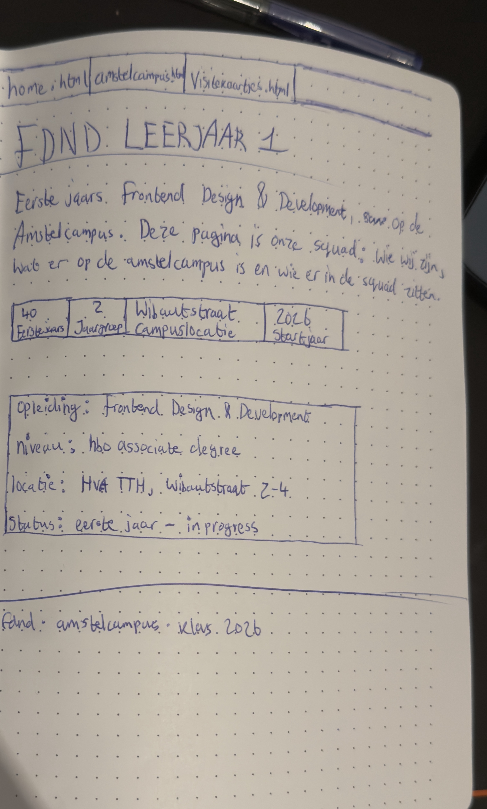
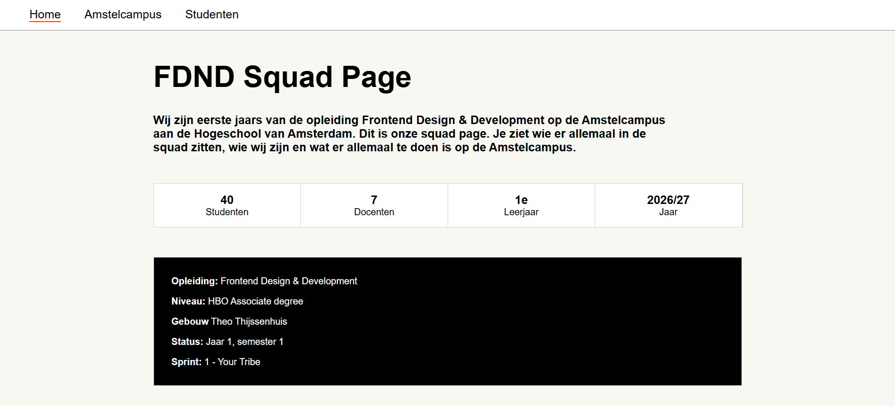

Week 1
Ik zat in een team van 3 studenten. Bij de analysefase hebben we opdracht gelezen en de repository klaargezet. We hebben besloten om 3 pagina's te maken en deze verdeeld. We waren snel over eens wie welke pagina ging maken. Ik ging de home pagina maken.
Bij de ontwerpfase hebben we inspiratie gezocht en interessante plekken op Amstelcampus onderzocht. We hebben een idee verzonnen en een teamlid een schets gemaakt en ik heb de breakdown schets met HTML elementen gemaakt.
Het bouwen deed ik thuis op woensdag en ik begon met de HTML elementen en daarna de CSS. Ik heb de pagina gemaakt op basis van de breakdown schets.
Het bouwen ging goed, maar 2 onderdelen gingen wat minder snel dan ik had gedacht, waardoor ik meer tijd nodig had. Ik was wel sneller klaar met de pagina dan ik had verwacht en ik was tevreden met de pagina. Helaas kregen we geen reactie van een teamlid en ik had nog tijd over dus heb besloten om de Amstelcampus pagina te maken. Ik dacht dat ik snel klaar was, maar het duurde langer dan verwacht. Ben tevreden over het resultaat.
Donderdag heb ik de breakdown schets gemaakt voor de small devcie en large device. Op vrijdag was het code/design review. Ik heb feedback gekregen van mijn teamlid en een ander team. Ik heb ook het werk van een andere teams gezien. Door ander werk te bekijken kreeg ik inspiratie voor de squad page. De feedback en ideeën heb ik opgeschreven. Ik heb de website live gezet en de repository bijgewerkt. De vervolgstappen voor de komende week waren: het verwerken van de feedback, het bouwen van de locaties-carrousel op de Amstelcampus pagina en het responsive maken van de website.

Learning Journal van week 1
Maandag 7 september
Sprint 1: Your Tribe | Project: Squad Page | Workshop: Sprint planning Squad Page
Wat heb ik gedaan?
Ik heb de leertaak gelezen en gekeken wat we moesten doen.
Repo klaarzetten, leden van mijn team toegevoegd en daarna de clonen. Ik heb mijn teamleden toegevoegd aan het Figma bestand en daarna samen de Team Canvas ingevuld in Figma.
Ik ben toen inspiratie overzicht pagina's gaan zoeken op internet en heb die in Figma gezet. Daarna heb ik gekeken wat de verschillen en overeenkomsten zijn van de visitekaartjes die in Figma zijn gezet door Jesper.
Toen heb ik informatie gezocht voor plekken om te studeren of eten in de Amstelcampus. Als laatste heb ik nog wat andere kleine opdrachten gedaan die in de leertaak beschreven staan.
Schrijf 3 dingen die je hebt geleerd?
Ik heb geleerd wat een Team Canvas is, hoe je in Github met mensen kunt samenwerken en in Figma.
Schrijf 2 dingen die je interssant vindt?
Ik heb geen idee. Maar ik ben wel benieuwd naar het bouwen van een website met meerdere mensen en dat we het straks tot 1 website gaan maken.
Schrijf 1 ding waar je nog vragen over hebt?
Er word in de leertaak over 1 pagina gesproken en dat iedereen op basis van de breakdown schets dezelfde pagina moet maken.
Wij maken een website met meerdere pagina's namelijk 3. Is het oké dat we dan allemaal 1 pagina bouwen en dat samenvoegen? Dus we gaan niet allemaal dan 3 pagina's maken, want dan zijn we wel erg lang bezig.
Donderdag 10 september
Sprint 1: Your Tribe | Project: Squad Page | Workshop: Responsive Design
Wat heb ik gedaan?
Ik heb met studenten gekeken wat voor resolutie mijn apparaten hebben die ik nu mee heb en daarna gekeken welke devices ik gebruik en een percentage gegeven hoe veel ik het internet daarop gebruik. We moesten een nieuwsartikel openen en bekijken welke breakpoints er zijn en dat bespreken wat op valt.
In mijn Learning Journal heb ik een html en css bestand gemaakt om mee te oefenen. Ik moest oefenen met Media Queries in deze file. Daarna een nieuwe breakdown schets gemaakt van een small device en large device met html en pseudo CSS code. De schetsen heb ik Github issue gezet.
Wat heb ik geleerd?
Wat een media query is en hoe ze werken, wat een breakpoint is en heb geleerd dat je klein begint met bouwen zoals mobile version en dat je daarna naar desktop formaat gaat. Je opent de dev tools en als de layout niet netjes is dan voeg je een breakpoint toe. Voor mobile hoef je geen breakpoint te gebruiken.
Vrijdag 11 september
Sprint 1: Your Tribe | Project: Squad Page | Workshop: Code & Design review
Wat heb ik gedaan?
Vandaag was het code/design review. Ik heb feedback gekregen en gegeven aan mijn teamlid en een ander team. 2 docenten en een ander team heeft naar onze squad page gekeken en feedback gegeven.
En ik heb ook hun Squad Page gezien en inspiratie daaruit gehaald.
Feedback gegeven
Ik heb feedback gegeven aan Bouyad. Zijn squad page is 1 lange pagina met daarin informatie over de Amstelcampus.
- Fonts toevoegen
- Kleuren aanpassen
- De tekst meer van de rand uitlijnen
- Buttons laten werken
- Search icoontje in de header zetten, want die zit er nu onder
- Layout aanpassen
Feedback naar Jesper
- Html/css tekst blok weg uit de kaartjes
- In de navigatie staat de naam van pagina met . html erachter. Ik vind dat niet leuk en onnodig, want zie het nooit ergens staan op een website.
- Geen hamburger menu op desktop. Anders kan header wel weg is en dan erg leeg. Op mobile is prima.
Feedback die ik heb ontvangen
- Ziet er duidelijk uit en profesioneel
- Misschien een foto bij de home pagina zetten of een design van iets, het brengt meer attentie en is meer klikbaar zodat ze sneller gaan doorklikken.
- Link naar FDND website groter maken
- Header ziet er goed uit
- Mooie layout, goed design en leesbaar.
- Kleuren en fonts zijn goed
- Voeg misschien een foto toe van Google Maps voor de locaties
- Verander het zwarte vlak naar een linear gradient. van donker linksboven naar licht rectsboven.
- Border radius van veranderen naar 5px of minder
- Intro stukje (onder de h1) een lichtere kleur geven
- Achtergrondkleur van pagina veranderen naar linear gradient van donker naar licht.
Wat gaan wij volgende week doen?
Werken aan eigen website en feedback toepassen die je hebt gekregen. Volgende week gaan we de website samenvoegen.
Ideeën die ik heb gezien en wil toepassen
Ik wil een carrousel met een foto van de gebouwen van de Amstelcampus maken en dat je dan naar de website pagina gaat van het gebouw.
Bronnen die ik deze week heb opgeschreven en wil gaan lezen
Ik heb geen bronnen eerder deze week opgeschreven, maar wel bedacht waarover ik een bron wil gaan opzoeken.
Ik ga een bron om media query te gebruiken gebruiken en om een carrousel te maken.
Week 2
Na de eerste dag van deze opdracht hadden we niets meer gehoord van een teamlid dus waren we nog met zo'n tweeën over. Over onze website heb ik een readme geschreven in GitHub en hierin heb ik uitlegd wat we hebben gemaakt, wie het heeft gemaakt en screenshots van de website.
Ik heb een lijstje gemaakt met wat ik nog moest doen. Ik heb woensdag en donderdag aan de squad page gewerkt. De taken die ik heb gedaan zijn carrousel op de Amstelcampus pagina met fotos van de locaties, kleuren aanpassen, de website mobile responsive maken en wat andere kleine dingetjes. Ik was langer bezig dan gedacht, doordat sommige code anders uit pakte dan verwacht. Vooral de mobile versie was moeilijk, maar uiteindelijk was ik klaar en tevreden met het resultaat van mijn 2 pagina's.
Op vrijdag hadden we nog tijd dus konden we nog wat aanpassen. De pagina met de visitekaartjes die mijn teamlid heeft gemaakt heb ik samengevoegd met mijn pagina's, zodat we een complete website hebben. En ik heb nog wat kleine dingetjes aangepast. Onze pagina's zien er niet hetzelfde uit, maar dat is wel leuk omdat je dan ziet dat het door 2 mensen is gemaakt. Ik heb alle wijzingen geïntrigeerd en de website is af.

Learning Journal van week 2
Maandag 14 september
Sprint 1: Your Tribe | Project: Squad Page | Workshop: Visuele Hiërarchie
Wat heb ik gedaan?
Ik heb geleerd over Visuele Hierachie. Samen met een andere student heb ik van een 3 verschillende websites pagina's anagegeven hoe de visuele hierachie is toegpast.
Daarna heb ik in Figma oefeningen gedaan en toen heb de squad page nagemaakt in Figma. Mijn team was er niet dus ik heb alles zelf gedaan. Het was best veel werk de 3 pagina's. Daarna heb ik in het ontwerp de 3 niveaus bepaalt.
Ik heb 3 verschillende versies gemaakt door te variëren met de grootte van teksten en elementen. En daarna waarbij je met kleur en contrast de belangrijkste informatie meer contrast geeft dan details. Als laatste waarbij belangrijke informatie meer witruimte krijgt en het op een andere plek op de pagina staat dan details en achtergrondinformatie. Ik heb 9 versies gemaakt. Daarna heb ik een nieuw ontwerp en breakdown schets gemaakt. Door code/design review op vrijdag kon ik mijn nieuwe idee ook schetsen.
En toen heb ik de schetsen en variaties op GitHub Issue gezet.
Op welke manieren kan je visuele hierachie aanbrengen in je ontwerp? Leg ze kort uit en voeg een bron toe.
- De grootte van teksten en elementen
- Kleur en contrast. Gekozen kleuren voor teksten en vlakken. Felle kleuren en een hoog contrast zoals donkere tekst op een lichte achtergrond
- Witruimte en positie de positie waar het element in staat en hoeveel witruimte er om heen zit.
- Animatie
- Typografie: fonts verschil tussen kopjes, platte tekst en subtitels
Bron: Onisontwerp.nl/blogs/visuele-hierarchie
Welke niveau van visuele hierachie heb je geleerd?
- Belangrijke info
- Belangrijke details
- Achtergrond informatie
Wie is Joshua Porter eigenlijk?
Joshua Porter is een Amerikaans UX/UI- en productdesigner, auteur en spreker. Hij is medeoprichter van Rocket Insights, een bureau voor web- en mobiele apps.
Hij heeft fundamentele principes gepubliceerd voor zowel productontwerp als gebruikersinterfaceontwerp, gebaseerd op jarenlange ervaring in de ontwikkeling van digitale producten.
Bron 1: Theiaconference.com/person/joshua-porter
Bron 2: Principles.design/authors/joshua-porter
Wat bedoelt Joshua Porter met zijn quote over visual hierachie?
"You use hierarchy to tell a story, to provide context that culminates in the action being taken.” Volgens Gemini:
- Een verhaal vertellen (To tell a story): Een interface moet logisch opgebouwd zijn. Door te spelen met grootte, kleur en contrast bepaalt de ontwerper waar de bezoeker als eerste kijkt en wat daarna komt, en wat secundaire informatie is. Dit creëert een visuele verhaallijn.
- Context bieden (To provide context): Voordat een gebruiker overgaat tot actie moet hij begrijpen waarom hij dat zou doen.
- Resultaat in actie (Culminates in action): Het uiteindelijke doel van de visuele hiërarchie is conversie of interactie. De 'opbouw' van het verhaal en de context zorgen ervoor dat de uiteindelijke actieknop (de Call to Action) als een logische en natuurlijke volgende stap aanvoelt.
- Kortom: visuele hiërarchie is volgens Porter de structuur die de aandacht van de gebruiker vasthoudt, de nodige betekenis geeft en hem moeiteloos naar de gewenste eindactie begeleidt.
Aantekeningen van vandaag over Visuele hieracie
- Duidelijke volgorde van visuele elementen/onderdelen/teksten
- Het verteld waar mensen moeten kijken
- visuele hiërarchie bereiken:
- Grootte
- Kleuren en contrast
- Witruimte en positie
- Animatie
Niveaus van visuele hiërarchie
- Belangrijke info
- Belangrijke details
- Achtergrond informatie
Divergeren = Experimenteren en variëren & Convergeren = Keuzes maken

Planning met team en hoe nu verder
Mijn team was er niet en reageert niet op de teams berichten.
Ik ga verder met de visuele hiërarchie opdracht en de feedback verwerken van de Squad page pagina's.
Woensdag 16 september
Sprint 1: Your Tribe | Project: Squad Page | Workshop: Wrap-up
Wat heb ik gedaan?
Ik heb in een issue opgeschreven wat ik allemaal nog moet doen en geassignd naar mij. Mijn teamlid was er niet, maar weet dat hij niet klaar is dus globaal opgeschreven wat hij moet doen. Daarna heb ik de issues bekeken en gesloten die gedaan zijn.
Daarna ben ik de readme gaan schrijven en foto's toevoegen.
Welke 3 dingen heb ik geleerd vandaag?
- Dat ik een issue kan assign naar iemand en hoe.
- Dat ik met edu.nl een shortlink kan maken
- Hoe ik een readme pagina kan maken